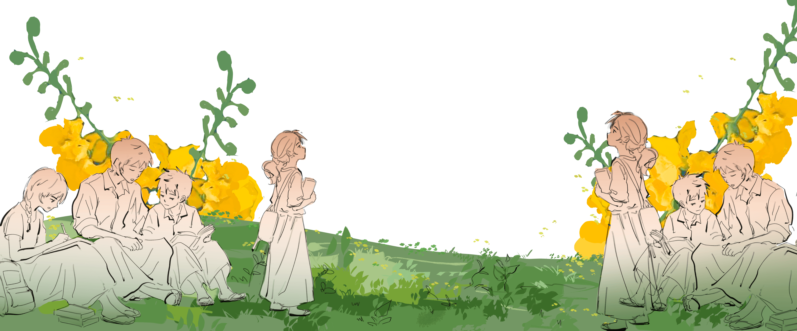
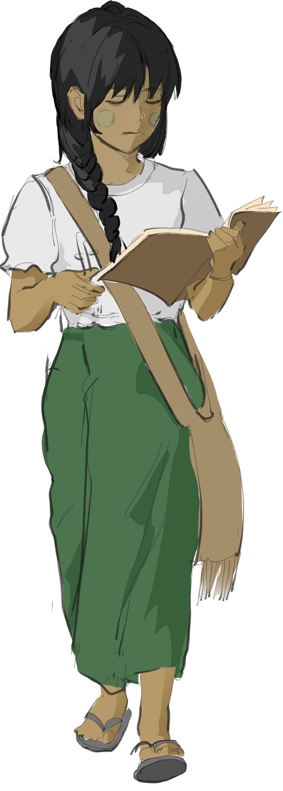

"I want peace to return swiftly so I can go back to my home."
Kyang Sau, 16years old was displaced with her family. They struggled with overcrowded living conditions, limited access to basic supplies and
interruptes learning. While facing these challenges, her spirit is not broken. Her dream is to become
a football player,
She strongly support Manchester United. Her favourite player is
Cristiano Ronaldo. However, she wishes the conflict to end which has overturned her dreams.
“My dreams of overcoming our family's hardships are now at risk, without my leg to propel me forward,”
15 years old Aung had a dream of being a Soldier to protect people. After he had stepped on the landmine.
He only dreams of being able to somehow support his parents,
and his future family. His dream of being a
soldier is forever gone.
"I want to go to school, study hard and become a doctor my family can depend on,"
Thae Thae Su Aung, 14 years old has a goal of becoming a Doctor. She wanted to help her sister and mother
who are frail and chronic illnesses. She has to stopped learning due to COVID-19 and Armed conflicts.